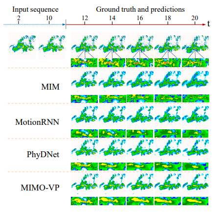
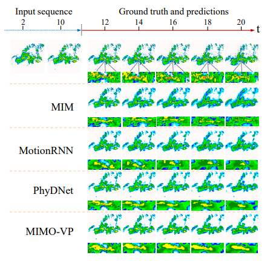
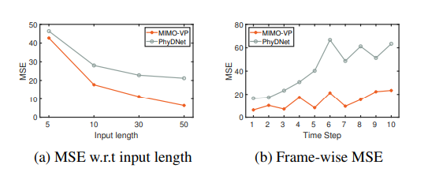
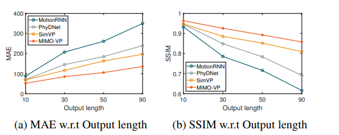

MIMO Is All You Need : A Strong Multi-In-Multi-Out
Baseline for Video Prediction
AAAI 2023
- Shuliang Ning 1,2,3*
- Mengcheng Lan 3*
- Yanran Li4
- Chaofeng Chen 3
- Qian Chen5
- Xunlai Chen5,#
- Xiaoguang Han 1,2,3,#
- Shuguang Cui1,2,3
- 1FNii, CUHKSZ
- 2SSE, CUHKSZ
- 3Shenzhen Research Institute of Big Data
- 4The University of Edinburgh
- 5Shenzhen Meteorological Bureau
Abstract
The mainstream of the existing approaches for video prediction builds up their models based on a Single-In-Single-Out (SISO) architecture, which takes the current frame as input to predict the next frame in a recursive manner. This way often leads to severe performance degradation when they try to extrapolate a longer period of future, thus limiting the practical use of the prediction model. Alternatively, a Multi-In-Multi-Out (MIMO) architecture that outputs all the future frames at one shot naturally breaks the recursive manner and therefore prevents error accumulation. However, only a few MIMO models for video prediction are proposed and they only achieve inferior performance due to the date. The real strength of the MIMO model in this area is not well noticed and is largely under-explored. Motivated by that, we conduct a comprehensive investigation in this paper to thoroughly exploit how far a simple MIMO architecture can go. Surprisingly, our empirical studies reveal that a simple MIMO model can outperform the state-of-the-art work with a large margin much more than expected, especially in dealing with long-term error accumulation. After exploring a number of ways and designs, we propose a new MIMO architecture based on extending the pure Transformer with local spatio-temporal blocks and a new multi-output decoder, namely MIMO-VP, to establish a new standard in video prediction. We evaluate our model in four highly competitive benchmarks (Moving MNIST, Human3.6M, Weather, KITTI). Extensive experiments show that our model wins 1st place on all the benchmarks with remarkable performance gains and surpasses the best SISO model in all aspects including efficiency, quantity, and quality. A dramatic 26.9\% MSE / 15.9\% MAE error reduction is achieved when predicting 10 frames on Moving MNIST and Weather datasets respectively. We believe our model can serve as a new baseline to facilitate the future research of video prediction tasks. The code will be released.
Qualitative Results
 

(a) Comparison of MIMO-VP and PhyDNet by predicting 10 future frames conditioned on different length of input sequence; (b) Frame-wise MSE of MIMO-VP and PhyDNet on Moving MNIST datase
Results of long-term predication on Moving MNIST dataset.
Acknowledgements
The website template was borrowed from Michaël Gharbi.